Lab 7 - Building advanced++ dashboards
Lab Goal
This lab shows you how to build and extend your advanced dashboard, sprucing it up with a few more important components until you have an advanced++ dashboard you can be proud of.
Advanced++ dashboard - Previous advanced dashboard
In the previous lab you started with a basic dashboard and created more advanced panels with
line charts in a new row. This workshop builds on the work you did on the last lab, so your
starting dashboard should look lik this (see next slide to jump to this point):
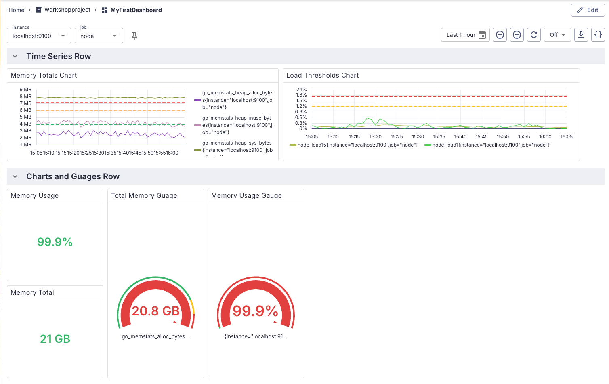
Intermezzo - Jumping to the starting point
If you have not completed the previous labs and just want to upload a fully completed dashboard,
just apply the file
support/dashboard-lab6.json found in the
Perses Easy Install project.
. It's a resource defining a dashboard as worked out in previous labs and can be applied as
follows:
$ ./support/bin/percli apply -f support/dashboard-lab6.json
object "Dashboard" "MyFirstDashboard"
has been applied in the
project "workshopproject"
Intermezzo - Evaluating the end results
If you want to just upload a fully completed lab result (basically cheating!) to see what the
final dashboard looks like without completing the lab work, just apply the file
support/dashboard-lab7.json found in the
Perses Easy Install project.
. It's a resource defining a dashboard as worked out in this lab and can be applied as
follows:
$ ./support/bin/percli apply -f support/dashboard-lab7.json
object "Dashboard" "MyFirstDashboard"
has been applied in the
project "workshopproject"
Advanced++ dashboard - Adding a new row
Time to add another row to your dashboard, where you'll be putting team status information. Add
a new
Panel Group by editing the dashboard, adding a new panel group,
Team Status and naming it as shown (don't forget to save the results):
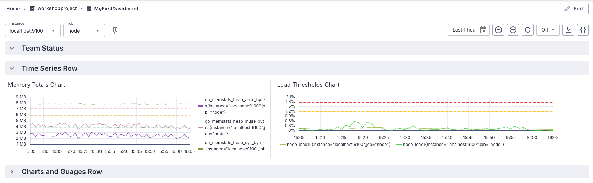
Advanced++ dashboard - Creating docs panel
Let's help our team out and create a handy documentation panel to help the on-call teammate
when they first land on our dashboard. This is a
Markdown panel and will
look like this when finished:
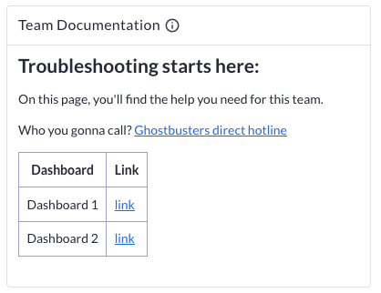
Advanced+++ dashboard - Adding team docs
Let's add your first
Markdown panel for the team using this dashboard. This
component can host anything you like as it's just a Markdown document inside. To add a new panel,
EDIT the dashboard, add a panel to the new row, and add details as shown:
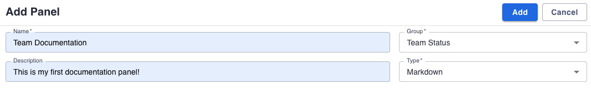
Advanced++ dashboard - Adding Markdown text
Scroll down to the
Markdown tab and add the following text, and note for
help you can use the Markdown Guide link:
## Troubleshooting starts here:
On this page, you'll find the help you need for this team.
Who you gonna call? [Ghostbusters direct hotline](https://perses.dev)
| Dashboard | Link |
| --------- | ---- |
| Dashboard 1 | [link](https://perses.dev) |
| Dashboard 2 | [link](https://perses.dev) |
Advanced++ dashboard - Using Markdown editor
The editor pane should look like this after you enter the Markdown:
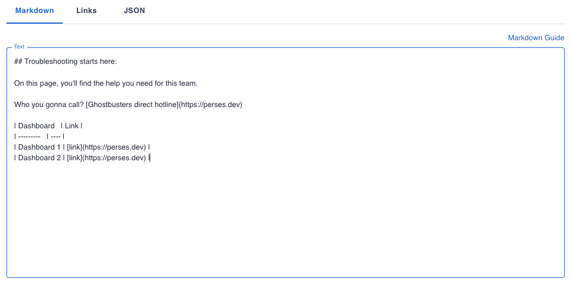
Advanced++ dashboard - Previewing docs panel
Preview the team documentation panel and ensure you like what you see:
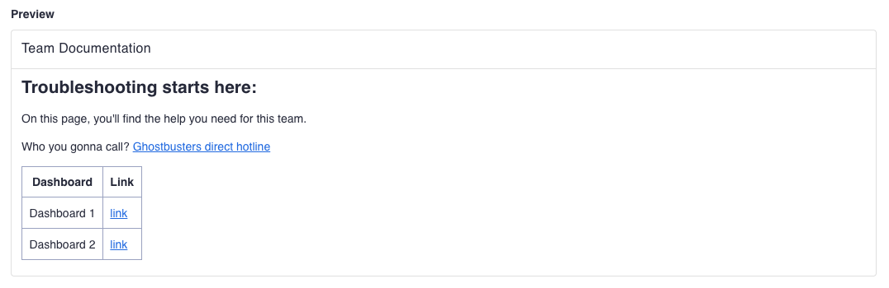
Advanced++ dashboard - Adjusting docs panel
To apply all the changes to this new panel and add it to the existing dashboard group, click
on the
ADD button at the top. Adjust the panel size until it displays the
team documentation as shown:
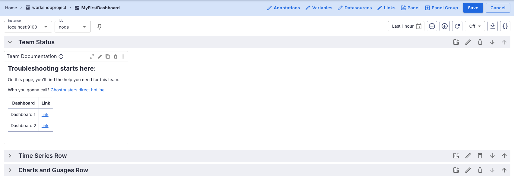
Advanced++ dashboard - Finalizing the dashboard
Now save the dashboard and your finalized Markdown documentation panel should look like this,
with the two other rows collapsed to save space:
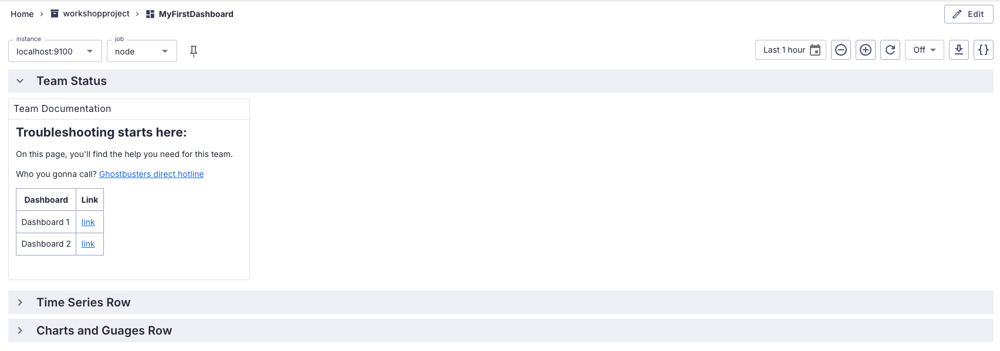
Advanced++ dashboard - Creating stat chart panel
The team would like to have an instant visual of each service they are responsible for. To show
an overview like this of their systems, lets create stat charts for each one with a green bar
if it's up and running. Add the first
stat chart panel to visualize the
status of the Node instance, which will look like this when done:
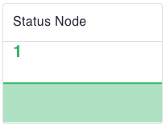
Advanced+++ dashboard - Adding stat chart details
This panel will use a simple query to fill the first panel. To add a new stat chart panel,
EDIT the dashboard, add a panel to the new row, and add details as shown:
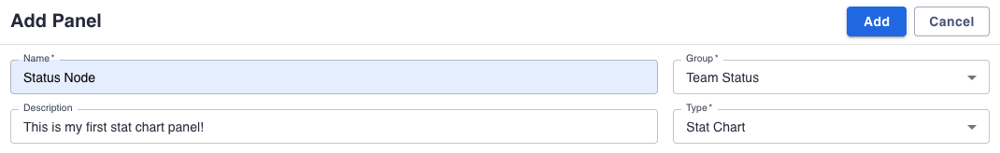
Advanced++ dashboard - Adding node query
Scroll down to the
Query tab and add the following PromQL query which will
target the Node status:
up{job="node"}
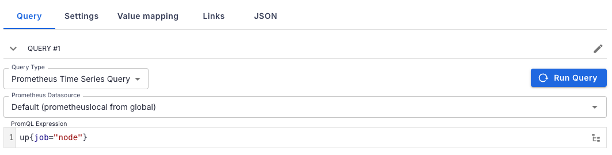
Advanced++ dashboard - Previewing node status
Preview the status panel and ensure you like what you see:
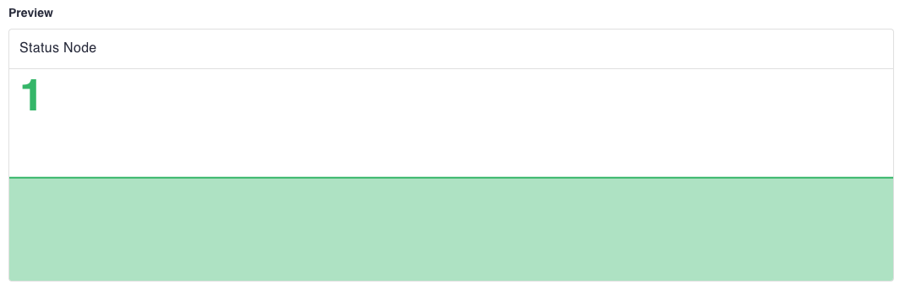
Advanced++ dashboard - Adding node status
To apply all the changes to this new panel and add it to the existing dashboard group, click
on the
ADD button at the top. Adjust the panel size until it displays as
shown:
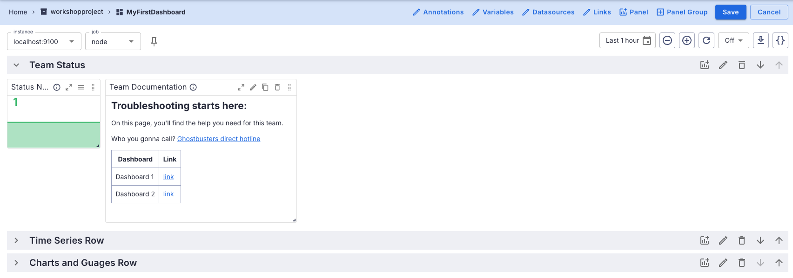
Advanced++ dashboard - Finalizing the dashboard
Now save the dashboard and your finalized node status panel should look like this:
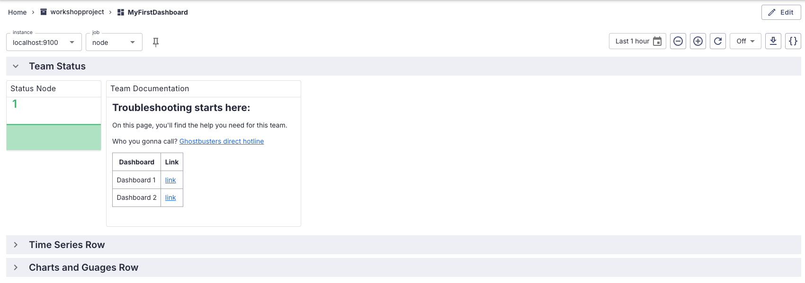
Advanced++ dashboard - Adding another stat chart
Now create another
stat chart panel for the Prometheus
instance (hint: found under the PromQL job syntax). Save and finalize the team status dashboard
to look something like the following:
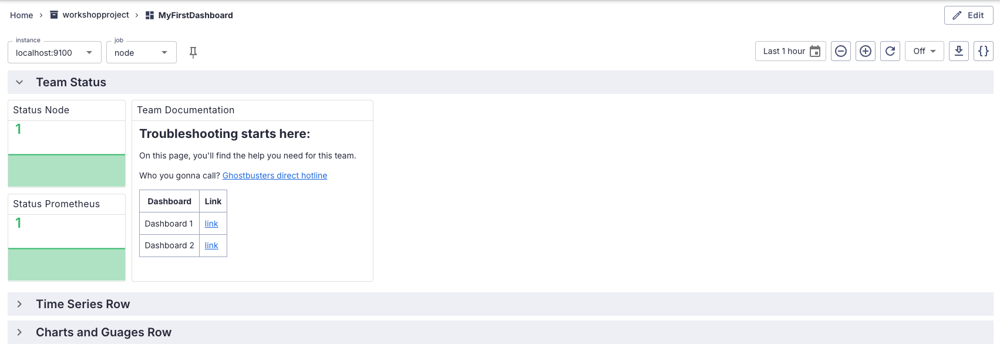
Advanced++ dashboard - Creating multi-gauge panel
It would be nice to have an overview of our system, each node with its own gauge to indicate
status. Let's add a
multi-gauge panel that provides a current system
overview, which should eventually look something like this:
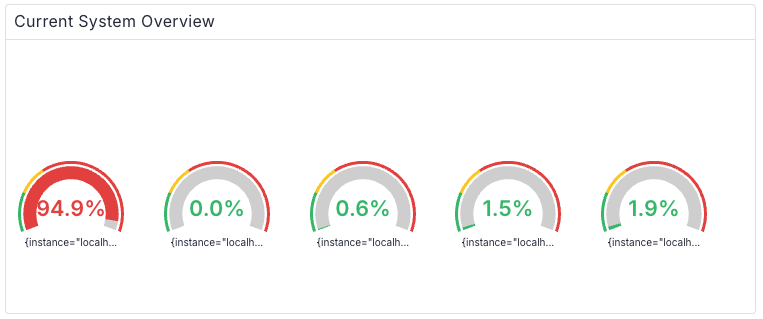
Advanced+++ dashboard - Adding overview details
This panel will use a more complex query to fill multiple gauges. To add a new multi-gauge panel,
EDIT the dashboard, add a panel to the new row, and add details as shown:
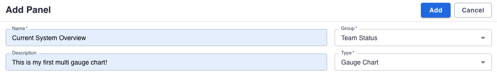
Advanced++ dashboard - Adding overview query
Scroll down to the
Query tab and add the following PromQL query which will
fill multiple gauges with node statuses:
avg without (cpu)(
rate(node_cpu_seconds_total{job='$job',instance=~'$instance',mode!="nice",mode!="steal",mode!="irq"}[3m])
)
Advanced++ dashboard - Adjusting overview settings
Adjust the settings for your system overview multi-gauge panel as shown to adjust the unit,
decimals, and thresholds (including the colors):
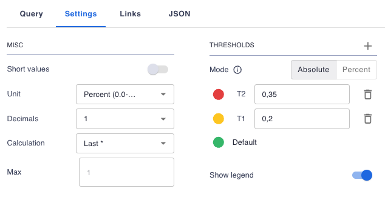
Advanced++ dashboard - Previewing system overview
Click on
RUN QUERY and preview the system overview panel and ensure you
like what you see:
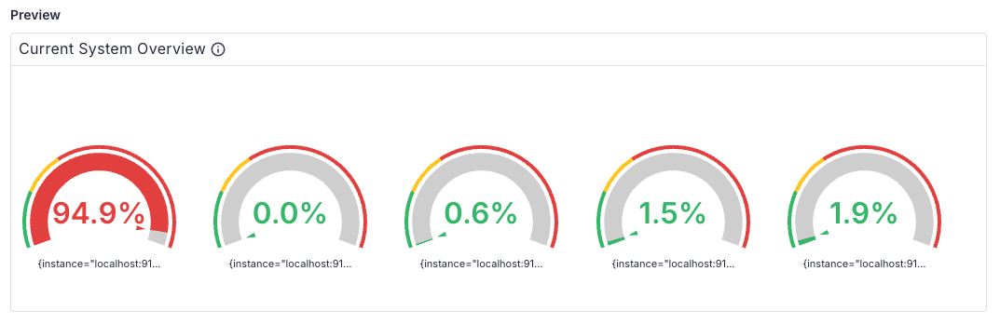
Advanced++ dashboard - Adding system overview
To apply all the changes to this new panel and add it to the existing dashboard group, click
on the
ADD button at the top. Adjust the panel size until it displays as
shown:
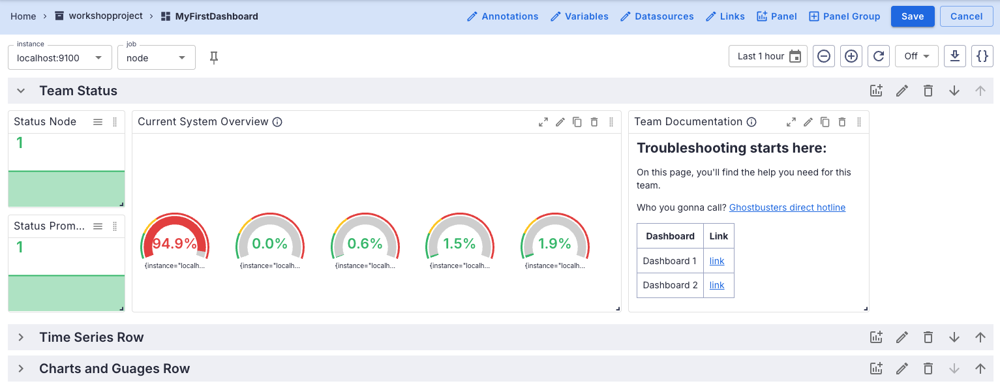
Advanced++ dashboard - Finalizing the dashboard
Now save the dashboard and your finalized multi-gauge panel with system overview should look
like this:
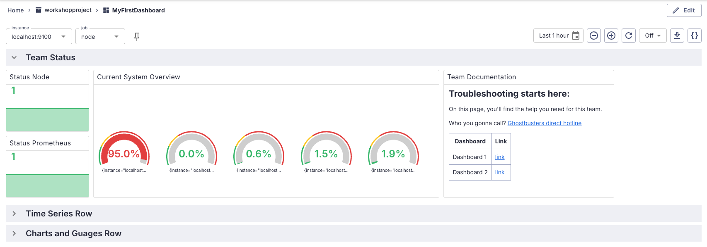
Advanced++ dashboard - Finishing touches
The last thing to do here is to determine how this dashboard presents when opened by your team
when on call. Reopen the WorkshopProject dashboard you just created (hint: try using home page
and the
Projects & Dashboards entry) you'll see each row is open showing
everything:
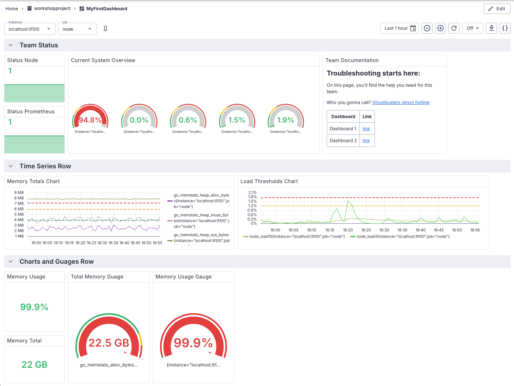
Advanced++ dashboard - Auto close rows
Let's change the last two rows group settings by editing the dashboard, then clicking on the
pencil icons in each row to edit that group, and using the pop-ups to set defaults to close the
rows as shown:
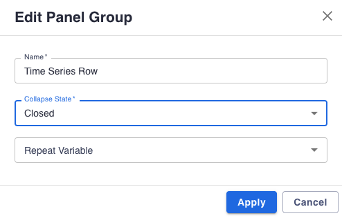
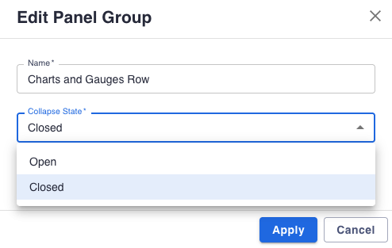
Advanced++ dashboard - Rearrange the row order
Finally, let's change the row order by moving the second row to the bottom using the arrows
to move the bottom row one level up as shown:
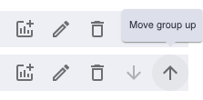
Advanced++ dashboard - Well done!
Now double-check your team's on-call dashboard is done by reopening it and see if only the first
row is open (hint: try it by refreshing your browser tab):
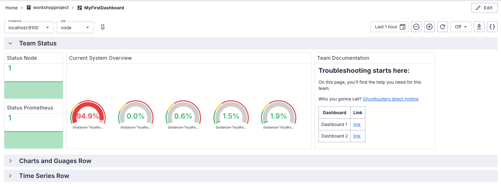
Lab completed - Results
Look what you've created!
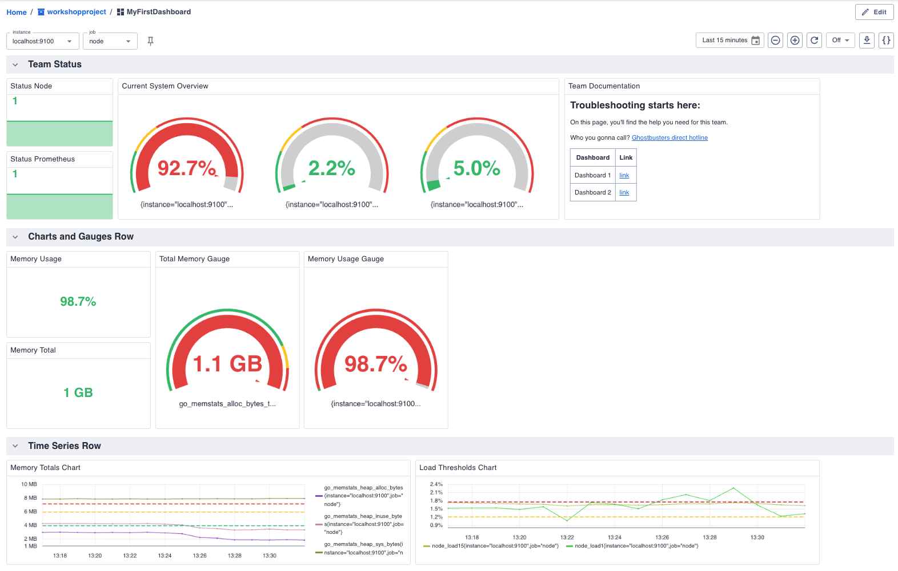

Contact - are there any questions?
Eric D. Schabell
Director Evangelism
Contact: @ericschabell {@fosstodon.org) or https://www.schabell.org
Director Evangelism
Contact: @ericschabell {@fosstodon.org) or https://www.schabell.org